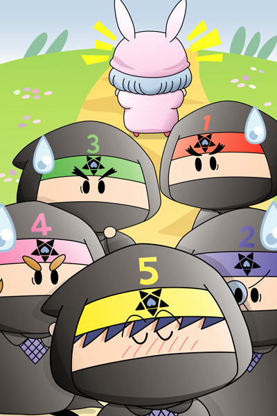

イチロー「どうやらムルモに嫌われてしまったようだな」
ジロー「まったくいい気味だ」
サブロー「これで我らの時代がやってくるぞ」
シロー「王国打倒も夢ではなくなったな」
ゴロー「ん？ 本当にそうなのか？」
パピィ「何よあんた達は！
余計なお世話よ、あっち行って！」
ジロー「まぁまぁ、ここで出会ったのも何かの縁」
シロー「我らが考えた新たな作戦を与えてやろうではないか」
パピィ「新たな作戦？」
サブロー「我らが考えたスペシャルでクールな作戦だ」
ゴロー「教えるのもドキドキするんだな、これが」
パピィ「ふん、おバカなワルモ団が考えた作戦なんておバカに決まってるわ」
イチロー＆ジロー＆サブロー＆シロー＆ゴロー「何を～っ！」
イチロー「あれぇ、聞きたくないんだ？
へへーんだ、教えてやらないもんねー」
ジロー＆サブロー＆シロー＆ゴロー「もんねー」
パピィ「ムカッ！
（こう言われるととっても気になるわ）
……いいわ、参考までに今日は特別に聞いてあげるわよ」
ワルモ団はさっと並び直し、先頭のイチローが説明します。
イチロー「ムルモ本人ではなくて、ムルモにとって大切な人を
困らせてみるというのはどうだ？」
ジロー＆サブロー＆シロー＆ゴロー「うん、うん」
パピィ「大切な人ってあたちの他に誰がいるのよ！？」
イチロー「たとえばだな…ムルモの両親…
いっそのこと王国を占領してムルモを悲しませてやれ。
そうすればムルモも目を覚ますんじゃないか？」
大きく出たイチローの発言に一瞬の沈黙が走ります。
パピィ「…こうなったらやってみるちかないわね。
あんたたち、たまにはいいこと言うじゃない」
イチロー＆ジロー＆サブロー＆シロー＆ゴロー「”たまには”は余計だ！」
パピィ「待ってなちゃい、ムルモ。
今度こそ思い出させてあげるんだから！！」

イチロー「それにしてもあの顔は化け物だったな」
ジロー＆サブロー＆シロー「だな！」
ゴロー「そうか？ オレは結構かわいいと思うぞ」
イチロー＆ジロー＆サブロー＆シロー「えっ」
前回の絵からかなり時間が経ってしまいごめんなさい。前回登場しかけた妖精というのは１人ではなく、何と何とワルモ団５人組(^^;。
ワルモ団は５人揃って１人前（それ以下？）なので、絵を描くのも、ストーリーを作るのも大変でした。そういえば、１つの絵に登場させる妖精の数は今までは４人が最高でしたので、今回は大幅更新ということになります(^^)。でも人数が多いとどうしても雑になってしまうので、２人くらいが私にとってちょうどいいのかもしれません。
(2006/7/15)